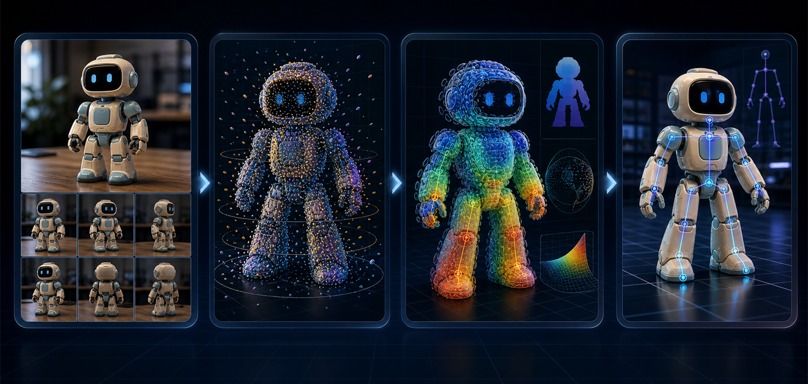

Why is a visually good 3D reconstruction not always good for rigging?
Analyze sparse-view failures around joints, thin structures, and movable part boundaries, then connect them to downstream skeleton and skinning errors.
Recover a 3D Gaussian asset from one or a few images, then evaluate whether it preserves the geometry needed for downstream rigging.

A reconstruction should not only look correct from new views; it should preserve joints, thin structures, and movable boundaries for rigging.
This topic is a strong entry point into 3D AI research because it produces visible results while still supporting serious research questions.
Analyze sparse-view failures around joints, thin structures, and movable part boundaries, then connect them to downstream skeleton and skinning errors.
Possible contributions include geometry priors, confidence filtering, floater removal, or joint-region coverage metrics.
Baseline reproduction, controlled object data, 3D viewer, quantitative tables, failure cases, ablations, demo video, and a conference-style paper.
The project connects sparse images, geometry priors, Gaussian primitives, and rigging-aware diagnostics.
Single image or sparse multi-view images of objects such as toys, animals, chairs, or characters.
Depth maps, point maps, cameras, and confidence signals help recover spatial structure.
Gaussian primitives with center, normal, scale, opacity, and appearance attributes.
Novel-view rendering, joint-region coverage, floater ratio, and downstream rigging quality.
Standard reconstruction optimizes novel-view rendering, while automatic rigging needs stable surface evidence, especially around joints and thin structures.
If sparse-view reconstruction produces floaters, inconsistent depth, or missing geometry, skeleton prediction and skinning will become unstable.
A runnable system, visual results, controlled experiments, and a conference-style paper.
Each stage has a concrete intermediate artifact.
Run a sparse-view reconstruction demo and understand image, camera, and Gaussian formats.
Compare reconstruction quality under different numbers of input views.
Add surface coverage, floater ratio, and joint-region recall analyses.
Use depth, point maps, confidence filtering, or geometry priors.
Summarize visualizations, rigging-aware diagnostics, and comparison tables.
The method centers on reconstruction, geometry priors, and downstream validation.
Build a baseline from 1-view, 2-view, or 4-view inputs to Gaussian primitives.
Use depth, point maps, and confidence to reduce inconsistent depth and floating primitives.
Evaluate whether reconstruction helps skeleton and skinning, not only whether rendering looks better.
Metrics should support both paper writing and intuitive explanation.
| Metric / Observation | Technical meaning | Intuitive explanation |
|---|---|---|
| PSNR / SSIM / LPIPS | Novel-view rendering quality. | Does the object still look clean and correct from new viewpoints? |
| Chamfer Distance | Distance between Gaussian centers and the surface. | Are the 3D points close to the object surface? |
| Floater Ratio | Noisy primitives far away from the surface. | Are there floating artifacts around the object? |
| Joint-region Recall | Surface evidence near joints and movable parts. | Are arms, legs, chair legs, or hinges reconstructed enough for rigging? |
| Downstream Skeleton Quality | Rigging quality after reconstruction. | Does the improved asset actually make automatic rigging more reliable? |
These projects provide useful system forms and output types.

Sparse multi-view images to 3D Gaussians. Project link

Images to camera, depth map, and point map geometry cues. Project link

3D asset to skeleton and skinning weights. Project link
External images are used only as related-work references; the teaser image on this page is generated.